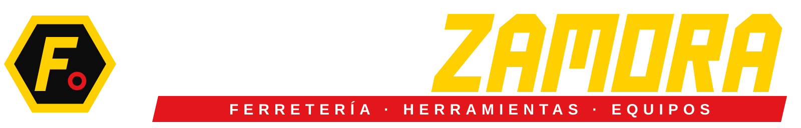
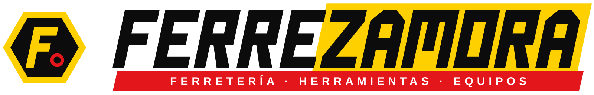
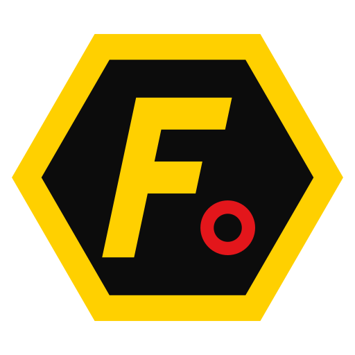
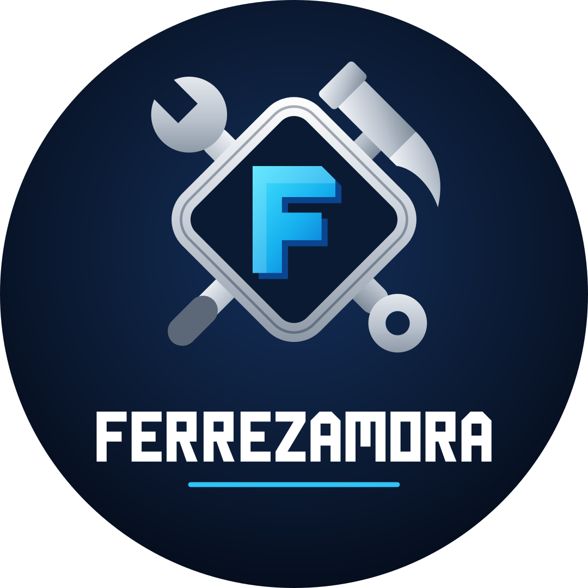

Versión 1 vs versión 2
Comparativa de las dos propuestas de logo para FerreZamora: primero los logos solos y después cómo se verían en la página web.
1 · Los logos solos
Las mismas piezas de cada versión, al mismo tamaño.






 FerreZamora
FerreZamora| Versión 1 | Versión 2 | |
|---|---|---|
| Reconocimiento | Imagen nueva. Los clientes actuales tendrían que aprenderla. | Se reconoce de inmediato como el logo actual de la tienda. |
| Tamaño pequeño | Muy legible: la tuerca y la F se ven claras incluso a 16 px. | A 16 px la llave y el martillo se pierden; se ve el rombo con la F. |
| Combina con la web | Usa los mismos colores y letras que la página y los afiches. | Azul y acero: contrasta con el negro y amarillo de la página. |
| Impresión | Colores planos: fácil y barato de imprimir, bordar o pintar en un letrero. | Usa degradados: se ve mejor en pantalla; para bordado o sello hay que simplificarlo. |
| Carácter | Fuerte, de trabajo pesado, igual que las marcas que vende. | Más sobrio y tecnológico; continuidad con lo que ya tiene. |
2 · Integrados en la web
Encabezado, inicio, catálogo y pie de la página real, reducidos. La versión 2 se muestra dos veces: en la web tal como está hoy y con la web adaptada a sus colores.


Encaja sin cambios: el logo usa los mismos colores, letras y franjas que la página y los afiches.
FerreZamoraferrezamora.comFunciona, pero se nota el cambio: el azul del logo es el único color frío en una página negra, amarilla y roja.
FerreZamoraferrezamora.comMás coherente con el logo, pero los afiches de los productos siguen siendo negros y amarillos, así que el contraste pasa del logo a las fotos.
En resumen: la versión 1 es la que mejor encaja con la página y con los afiches que ya publica la tienda. La versión 2 es la mejor opción si el cliente quiere que sus clientes actuales reconozcan el logo de siempre.